Quiz Magic
the Gathering
au Festival Dons des Dragons 2024
Par les Arpenteurs de Strasbourg
Samedi 30 novembre 2024
Un Quiz sur Magic: the Gathering
Bienvenue dans ce quiz sur Magic: the Gathering
, notre jeu préféré !
Il y aura 20 questions, 5 fois de suite selon ce motif :
- 1 question “plus dure”, valant 2 points chacune, avec un bonus
valant 1 point de plus !
- 4 questions “plutôt faciles”, en QCM à deux ou quatre choix, valant
1 point chacune,
Répondez sur vos ardoises, et à chaque question nous compterons les
bonnes ou mauvaises réponses !
Question
1/20 : connaissance de l’histoire du jeu (dure)
- Comment s’appelle l’extension ayant ce symbole ?
- Bonus : estimer en quelle année elle est
sortie ?
Correction : Question 1/20
Réponse : extension Conflux
(CON)
Sortie le 06 février 2009.
Question
2/20 : estimation statistique sur les cartes
Quel type de créature est le second le plus
représenté dans la couleur
rouge ?
- Dragon
- Humain
- Gobelin
- Guerrier
Correction : Question 2/20
Réponse :
- 148 dragons rouges
- 497 humains rouges
- 370 goblins
rouges
- 339 guerriers rouges
Correction : Question 3/20
Réponse : 3. Un héro antique, Tetsuo
Umezawa.
Source
: Wiki MTG.fandom.com :
Bolas was furious over the death of his regent.
Tetsuo fled to
the Meditation Plane and Bolas followed.
This proved a mistake for
the Elder Dragon however, Tetsuo had cast the Meteor
Hammer spell.
The spell destroyed the Imperial Shrine, thus
destroying the mana foothold Bolas needed to stay in Dominaria.
Denied his powers as a planeswalker, Bolas was defeated by Tetsuo.
Correction : Question 4/20
Réponse : N’importe quelle
couleur.
Le Mage de la Lune opère dans la couche de
changement de types (Règle 613.1d), qui est appliquée avant la
couche d’ajout et de suppression de capacité (613.1f).
Les Cavernes aux Gemmes sont donc une montagne (non
basique), avec la capacité additionnelle
“ : Ajouter un mana de la couleur
de votre choix”.
Correction : Question 6/20
Réponse : 2. Hébétude
(Daze)
Les quatre ont été éditées dans leur première édition à la rareté
commune, mais 2. Hébétude
(Daze) est la seule à être bannie en Pauper.
Question 7/20 :
connaissance des cartes
Quel est le coût converti de mana le plus élevé imprimé à bords noirs
(donc pas à bords argentés) ?
Correction : Question 7/20
La réponse est , avec la carte
Draco de
l’extension Planeshift (sortie en 2001).
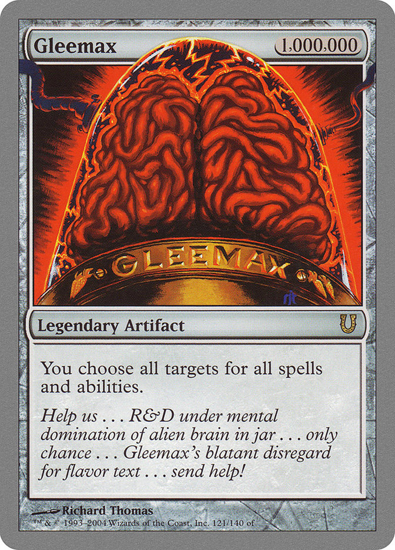

En comptant les cartes à bords argentés, il s’agit de Gleemax
qui a un coût de mana de 1.000.000 (un million de manas incolores).
Correction : Question 8/20
Réponse : il s’agit de 3. Terese
Nielsen.
Elle est notamment connue pour le cycle des “Guru Lands”,
les terrains de base les plus chers de tout Magic (1040€ le premier prix
pour une Île !), qui ont aussi ce style riche en
détails “astronomiques”.
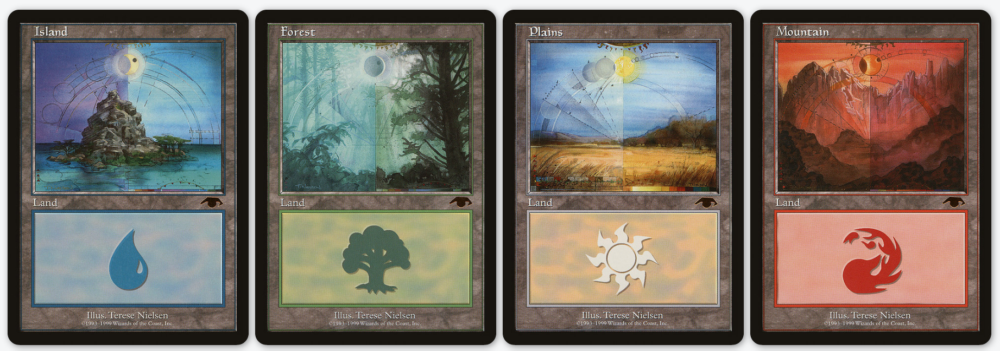
Question 9/20 :
connaissance des règles
Dans ma bibliothèque, quelle est la force du Changeforme
corrompu ?

- zéro, car sa capacité n’est pas une capacité de
définition de caractéristique (règle
604.3a.)
- trois, car c’est le premier choix imprimé sur la
carte (règle
604.3b.)
- ton choix parmi zéro, deux et trois, car sa
capacité est une capacité de définition de caractéristique à choix
multiple (règle
604.3a.)
- zéro, car c’est le dernier choix imprimé sur la
carte (règle
604.3c.)
Correction : Question 9/20
Réponse : 1. zéro, sa capacité
n’est pas une capacité de définition de caractéristique (CDC), comme
expliqué dans la règle règle
604.3a..
En gros : elle dépend d’un choix à faire lors d’une arrivée sur le
champ de bataille, donc n’est pas une CDC.
Question 10/20 :
estimation statistique
Combien d’exemplaires de la carte nommée Black
Lotus ont été imprimés dans l’édition
Alpha, à l’origine du jeu Magic: the
Gathering en 1993 ?

- 190
- 1100
- 25000
- 360000
Correction : Question 11/20
Il s’agit de 3. Le Lhurgoyf, ce que l’on peut
apprendre en lisant les textes d’ambiance de cette carte :
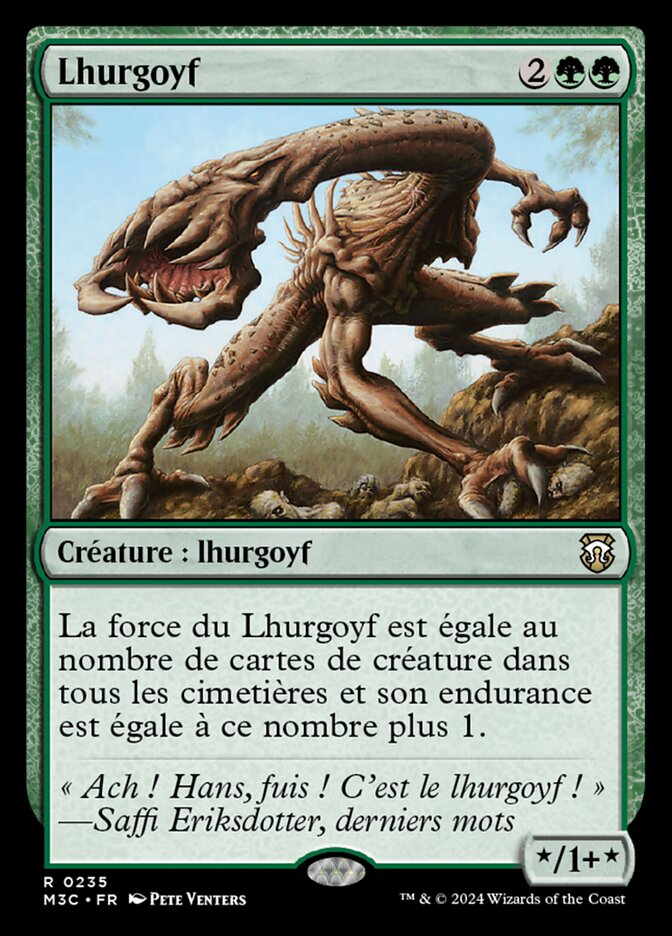
« Ach ! Hans, fuis ! C’est le Lhurgoyf ! »
– Saffi
Eriksdotter, derniers mots
Le Lhurgoyf a comme coût de mana
.
Question 12/20 :
connaissance des cartes
Oups, sa rareté a eté effacée…
De quelle rareté est cette carte,
le Biomathématicien
?

- Commune
- Peu-commune
- Rare
- Rare
mythique
Correction : Question 12/20
Réponse : 1. commune.
Question
13/20 : connaissance des extensions “Univers Étendus”
Il y a quelques semaines, les premiers Secret Lairs Magic /
Marvel sont sortis.
Lequel(s) de ces super héros n’a pas
(encore ?) été annoncé(s) ?
Il faut avoir la bonne ou toutes les
bonnes réponses.
- Tornade
(Storm)
- Wolverine
/ Logan
- Cyclope
- Professeur X
(Charles Xavier)
Correction : Question 13/20
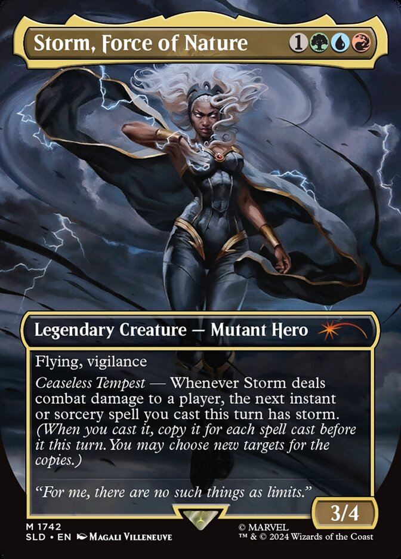
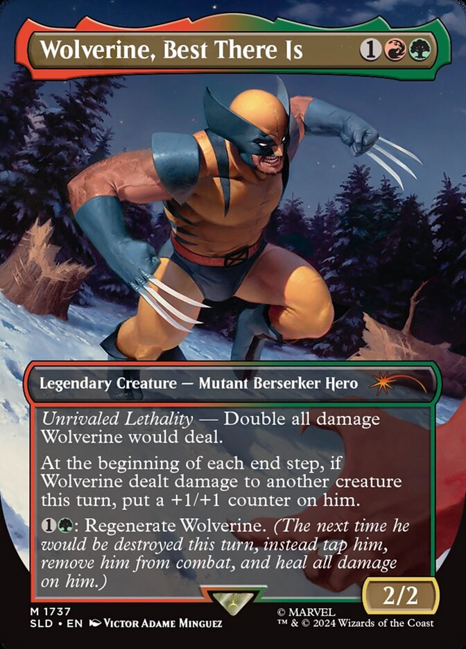
Réponse :
- Cyclope et
- Professeur X
(Charles Xavier)
n’ont pas (encore ?) été annoncés.
Correction : Question 15/20
Réponse : il s’agit des deux seules créatures ayant
l’Infection et une force de 10 ou plus, à savoir Étali,
mal primordial et Colosse
de pestacier. Les deux autres n’ont pas l’infection et ont
une force de 11 pour le Colosse de Sombracier, et de 15
pour Emrakul, Déchirure des Éons.
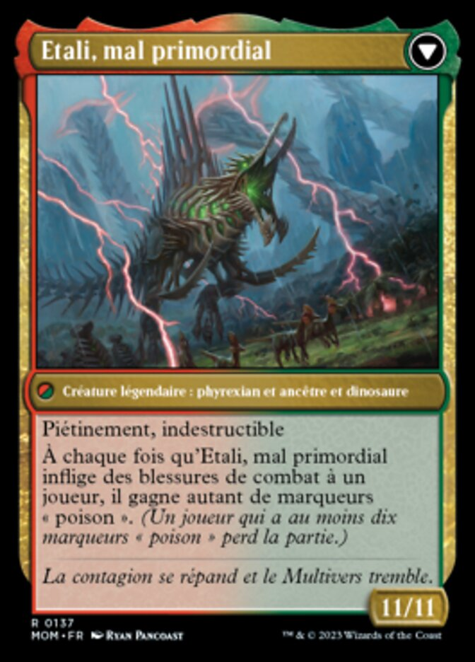
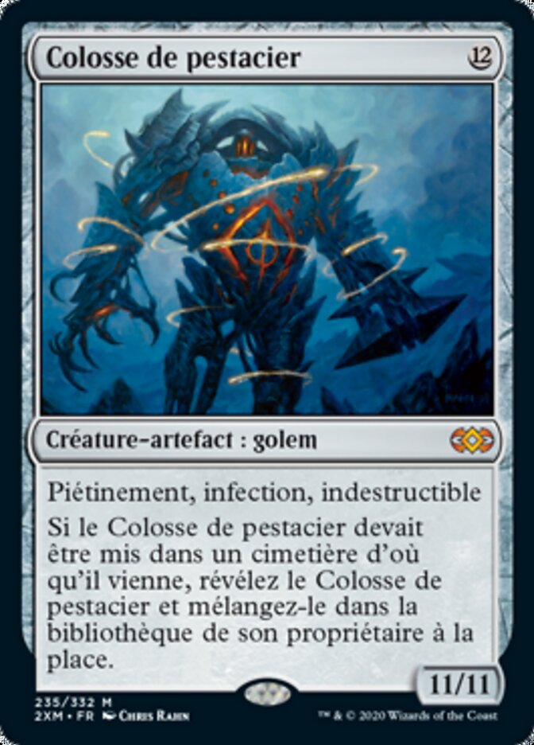
Question
16/20 : connaissance des cartes, y compris les bords argentés
(dure)
En considérant les cartes à bords argentés (les “Un-set”) et
les jetons que celles-ci peuvent créer, combien de couleurs existent en
tout dans Magic ?
- six : cinq couleurs + l’incolore
- six : cinq couleurs + le rose
- sept : cinq couleurs + le rose + le doré
- autant que l’on veut, car on peut nommer la
“couleur des yeux” !
Correction : Question 16/20
Réponse : 4. il y a bien sept couleurs précises :
cinq couleurs, plus :
Correction : Question 16/20
Mais, il faut aussi ajouter toutes les couleurs imaginables, car Avatar of
Me est de la couleur des yeux de son contrôleur…
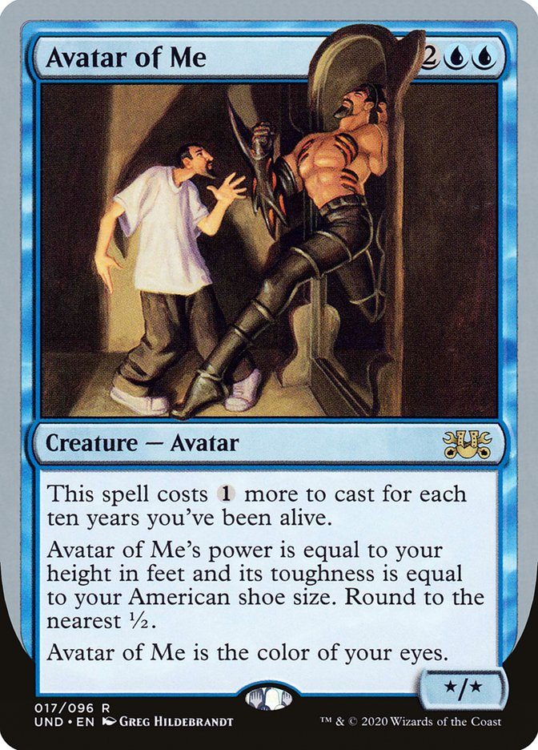
Notes and Rules Information for Avatar of
Me: Thanks to Avatar of Me, if you’re asked to choose a color
in a silver-bordered game, you can name any color. […]
Question 17/20 :
connaissance du lore
Quel est plan du multivers a été le plus souvent visité par les
extensions officielles de Magic, à ce jour ?
- Mirrodin
- Innistrad
- Ravnica
- Dominaria
Correction : Question 17/20
Réponse : Dominaria : c’est assez évident si on
connaît le début de Magic ! En effet, jusqu’au bloc Mirrodin sorti en
2003, presque tout se passait sur Dominaria ! Depuis, Dominaria est
resté un bloc très visité.
Question 18/20 :
estimation statistique (dure)
Qui est l’artiste ayant illustré le plus de cartes différentes
(versions papier) ? Bonus : estimer pour combien de
cartes ?
En comptant
toutes les variations, de cartes réellement imprimées, comme le ferait
Scryfall en cherchant un/une artiste particulier.

- Dan
Frazier
- John
Avon
- Kev
Walker
- Greg
Staples
Correction : Question 18/20
Réponse : 2. John
Avon, avec actuellement 1306 cartes différentes (au 1er novembre
2024).
Les autres artistes ont, respectivement, 752 cartes pour Dan
Frazier, 1196 cartes pour Kev
Walker, et 789 cartes pour Greg
Staples.
Question 19/20 :
“œil de lynx” sur une carte fun
 Comme un pro de
Comme un pro de Photoshop GIMP, j’ai modifié un petit détail sur
cette carte, la Goblin
Ski Patrol datant d’Ice Age (1995)… Qu’ai-je modifié ?
- L’illustration, j’ai ajouté des cornes !
- Le coût de mana, en vrai c’est
- L’illustration, j’ai enlevé la signature
de Mark Poole en bas à
droite
- Le nom du gobelin cité en texte d’ambiance…
Correction : Question 19/20
Réponse : 3. L’illustration, j’ai
enlevé la signature de Mark Poole.
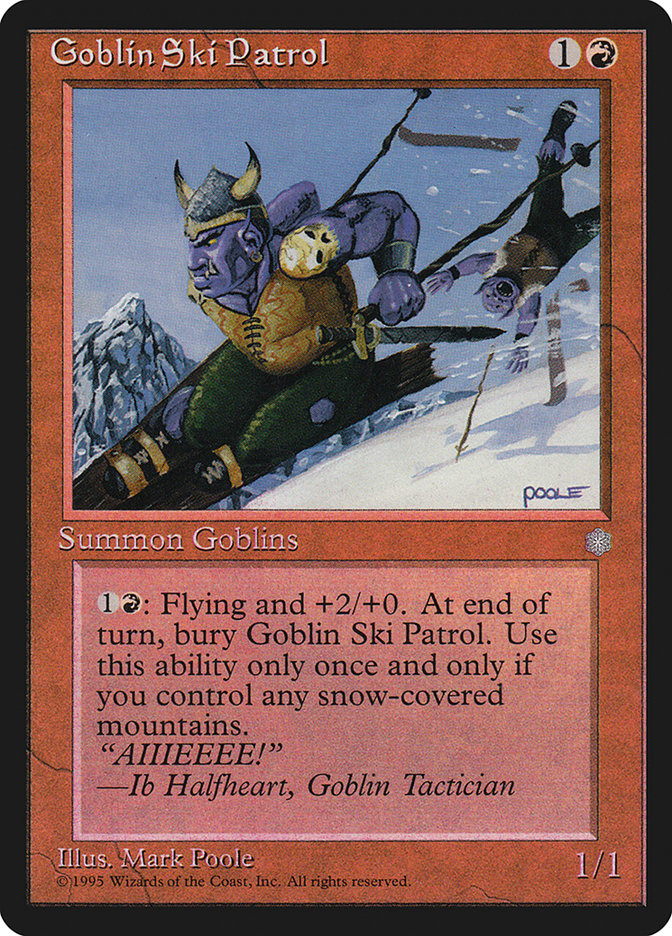
Question 20/20 :
connaissance des règles
Je contrôle Padeem,
Consul de l’Innovation, ainsi qu’une Baliste
ambulante ayant été lancée pour X valant un million (balèze
!).
Aucun autre permanent présent n’a atteint de valeur aussi
impressionnante.


A mon entretien, suis-je certain de
piocher, par la capacité de Padeem ?
- Oui
- Non
Correction : Question 20/20
Réponse : Non, la Baliste a un coût de mana égal à
zéro sur le champ de bataille.
Question
21/20 : connaissance des cartes - Bonus pour départager, si besoin
Combien existe-t-il de cartes en tout, qui représentent les parents
du plus mignon petit singe de tout Magic, Kibo,
prince de l’Ouktabi ?
- aucune, Kibo n’existe pas et a été inventé pour
cette question !
- une seule, l’Orang-outang
de l’Ouktabi de Visions (1996),
- deux, avec aussi le Uktabi
Kong à bords argentés,
- trois, Kibo lui-même étant représenté avec ses
parents.
Correction : Question 21/20
Réponse : trois, Kibo lui-même étant représenté avec
ses parents.
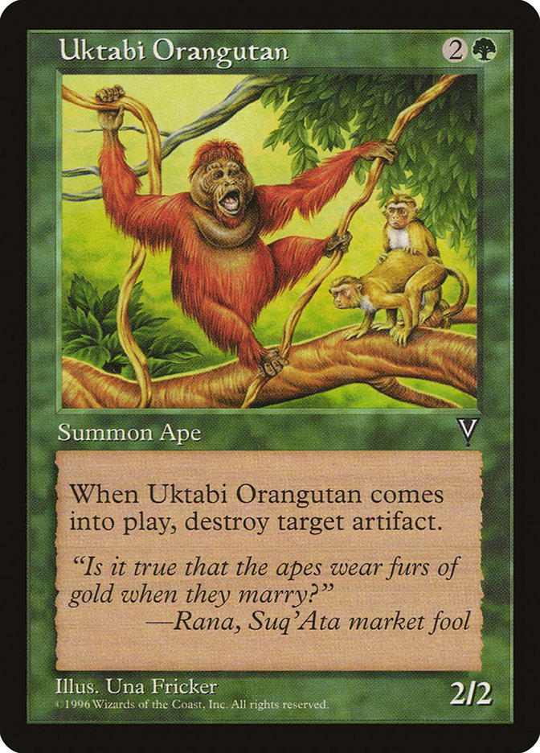
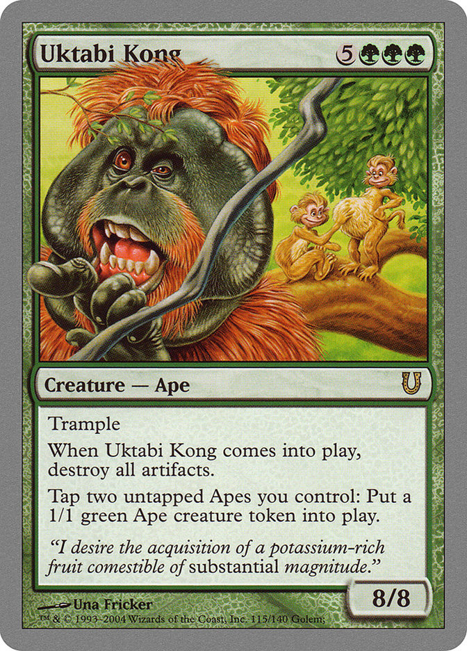
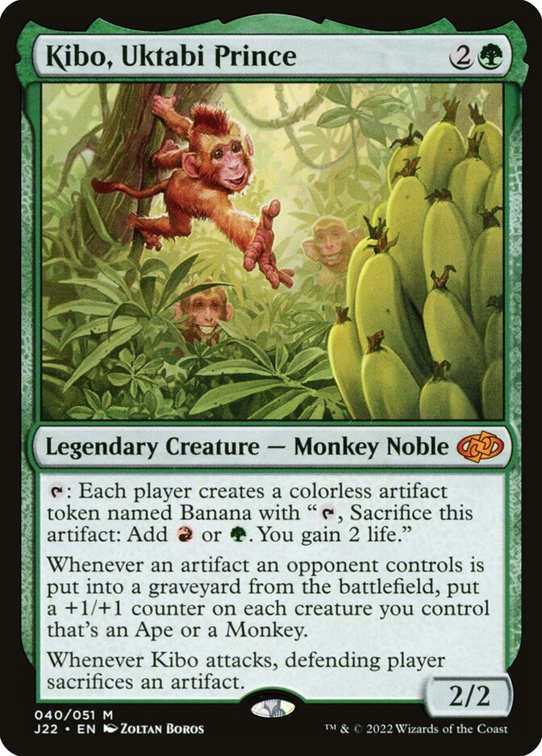
Fin du Quiz !
🎉 Bravo à
tous et toutes, merci de votre participation ! 🎉
🎁 Calcul des scores
et distribution des lots ! 🎁
A propos de ce Quiz
Magic


 Qui est l’artiste ayant illustré la carte
Qui est l’artiste ayant illustré la carte 
 Comment s’appelle l’artefact légendaire qu’il faut contrôler, afin de
pouvoir obtenir la surpuissante carte fusionnée
Comment s’appelle l’artefact légendaire qu’il faut contrôler, afin de
pouvoir obtenir la surpuissante carte fusionnée